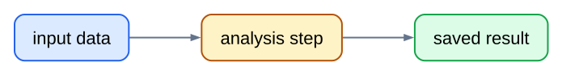
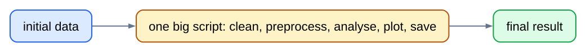
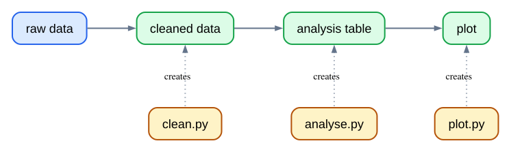
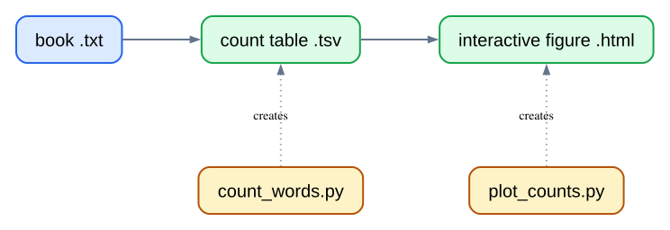
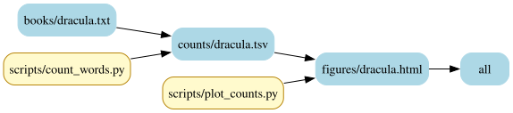
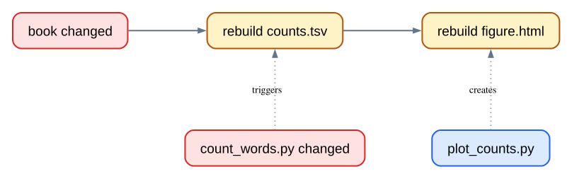
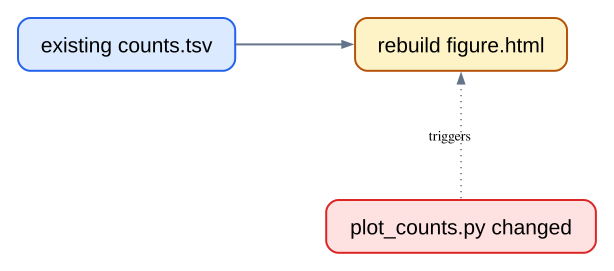
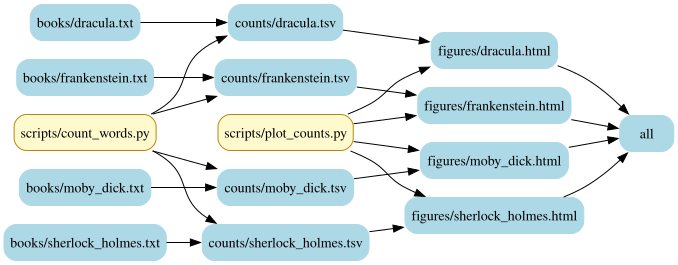

A repeatable workflow that rebuilds only what changed
Good Enough Computing in Science
Automation makes analysis repeatable
We want a workflow that we can run again:
for a new input file;
after changing the code; and
without remembering every command by hand.

One giant script hides the workflow

Intermediate results disappear.
Failures are harder to locate.
Changing one step means reading a large program.
Save the steps that matter
Split work into small scripts and files that can be checked independently.

Each output is a checkpoint: inspect it, test it, or reuse it.
Modular workflows leave two questions
New data arrives. How do we run the same workflow for the new file?
Code changes. Must we rerun everything, or only the affected part?
Make records the plan
# Makefile: a small description of the workflowoutput-file: input-file scriptcommand input-file output-file
Make reads rules like this to learn:
which file to create;
which files it depends on; and
which command creates it.
Our book workflow
gecs-make turns books into count tables and interactive figures.

First output: Dracula’s count table
counts/dracula.tsv: books/dracula.txt scripts/count_words.pyuv run python scripts/count_words.py books/dracula.txt counts/dracula.tsv
Target
The file to create.
Prerequisites
The input data and code it needs.
Recipe
The tab-indented command that creates the target.
Add the final figure
figures/dracula.html: counts/dracula.tsv scripts/plot_counts.pyuv run python scripts/plot_counts.py counts/dracula.tsv figures/dracula.html
make figures/dracula.html
Make builds counts/dracula.tsv first when needed, then makes the HTML figure.
Dracula’s real project graph
The graph comes from the project’s Make rules, not from a hand-drawn diagram.

Dracula DAG generated by makefile-graph
A changed book or counting script rebuilds downstream work

The count table is no longer trustworthy, so Make rebuilds it and every output that depends on it.
A changed plotting script starts later

The count table stays current. Only the figure needs to be made again.
Name shared commands
# Run every Python command through uv.PYTHON:= uv run python# Name the scripts used by our rules.COUNT_SCRIPT:= scripts/count_words.pyPLOT_SCRIPT:= scripts/plot_counts.py
Variables make the Dracula rule shorter and keep shared details in one place.
Discover every book without listing it by hand
# Find every text file already in books/.BOOK_FILES:=$(wildcard books/*.txt)
$ make print-booksbooks/dracula.txtbooks/frankenstein.txtbooks/moby_dick.txtbooks/sherlock_holmes.txt…
wildcard reads the book files that really exist. Add another .txt file and it joins the workflow.
Derive matching paths with patsubst
# Pattern substitution: replace books/%.txt with counts/%.tsv.COUNT_FILES:=$(patsubst books/%.txt,counts/%.tsv,$(BOOK_FILES))# The same book names become figure paths.FIGURE_FILES:=$(patsubst books/%.txt,figures/%.html,$(BOOK_FILES))
patsubst means pattern substitution. % matches the changing book name, then inserts it into the new path.
One rule shape works for every book
# Turn any book text file into its matching count table.counts/%.tsv: books/%.txt $(COUNT_SCRIPT)$(PYTHON)$(COUNT_SCRIPT)$<$@# Turn any count table into its matching HTML figure.figures/%.html: counts/%.tsv $(PLOT_SCRIPT)$(PYTHON)$(PLOT_SCRIPT)$<$@
$< is the input; $@ is the output being built.
The % in each rule keeps the matching book name.
The project workflow in full
The same rules describe every book and every dependency in the project.

Four-book DAG generated by makefile-graph
Why use Make
Automated order: no need to remember the steps.
Reproducibility: someone else can run the same project command.
Modularity: scripts and intermediate outputs stay understandable.
Selective rebuilding: timestamps identify what must run again.